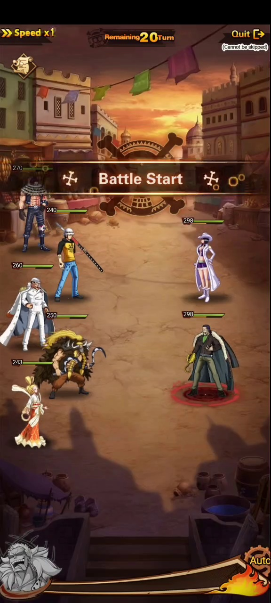
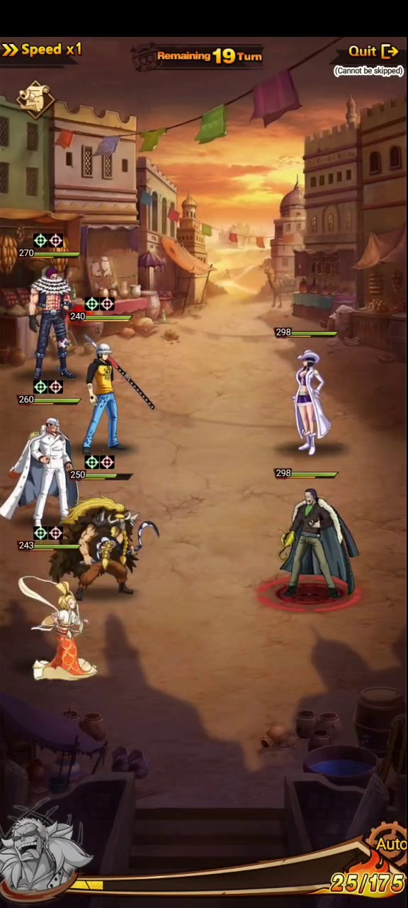
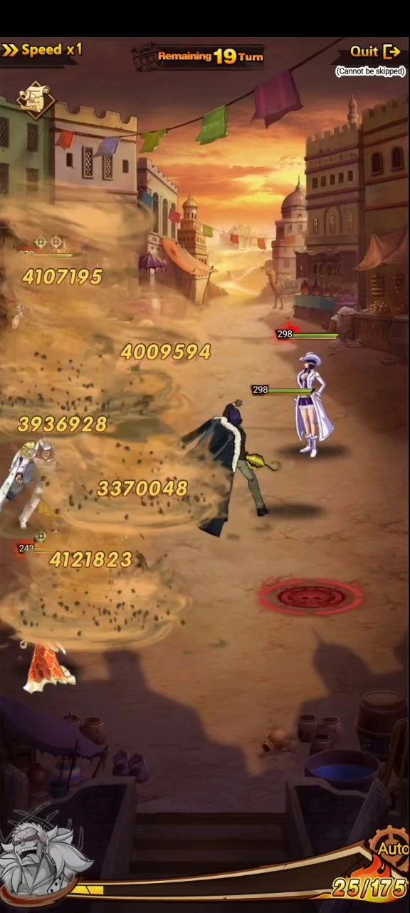
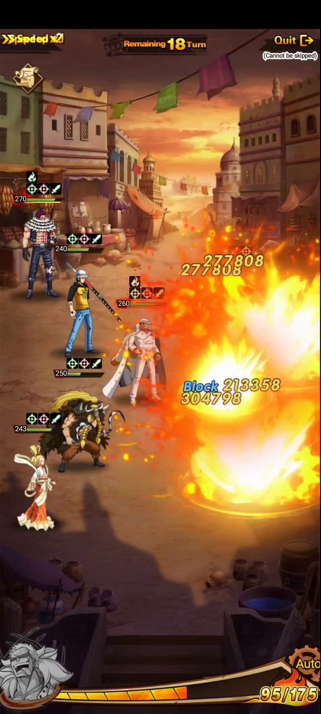
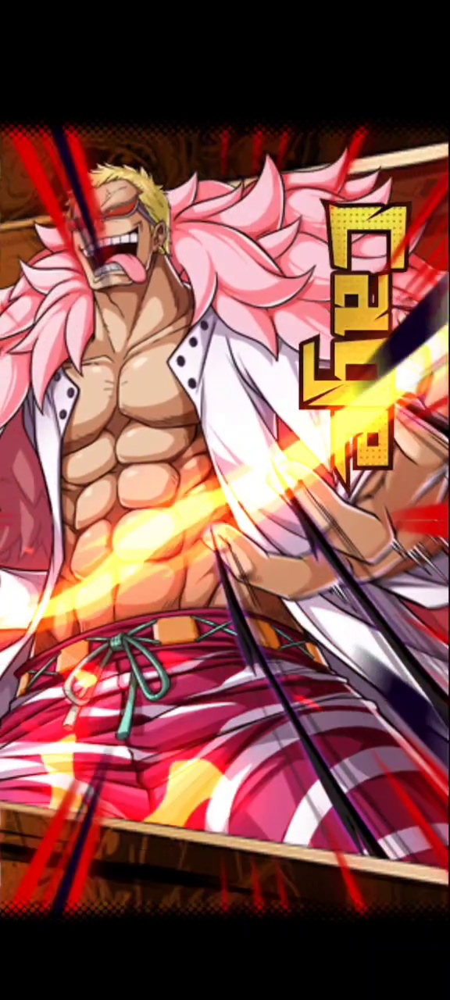

Formación
Se observan 5 unidades aliadas contra 2 enemigos visibles.
Sistema base
Las peleas son por turnos, con límite de turnos, velocidad ajustable, modo automático, barra de carga inferior, estados sobre unidades y animaciones especiales.
Video analizado





Reglas visibles
| Elemento | Observado | Lectura |
|---|---|---|
| Remaining Turn | Empieza en 20 y baja a 19, 18, 17. | La pelea tiene límite de turnos para ganar. |
| Speed | Se ve Speed x1 y luego Speed x2. | El combate permite acelerar la animación. |
| Auto | Botón visible abajo a la derecha. | Puede automatizar acciones de combate. |
| Quit | Botón visible arriba a la derecha. | Permite abandonar la pelea. |
| Cannot be skipped | Texto visible junto a Quit. | Esta pelea no se puede saltar. |
| Barra inferior | Sube de 0/175 a 135/175. | Probable energía/furia para habilidad o progreso de turno. |
Equipo y acciones
Se observan 5 unidades aliadas contra 2 enemigos visibles.
Los niveles aparecen junto a las barras de vida de cada unidad.
Hay iconos sobre unidades: buffs, debuffs, control y marcas de ataque.
Los golpes muestran números grandes sobre los objetivos dañados.
Se ve el texto Block, señal de mitigación o defensa efectiva.
Algunas acciones activan animaciones especiales a pantalla completa.
Pendiente de confirmar
Falta confirmar si es energía, furia, ultimate o medidor de equipo.
Falta confirmar si depende de velocidad, posición o iniciativa oculta.
Falta identificar cada icono y su efecto exacto.